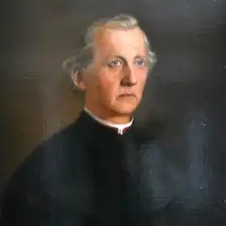
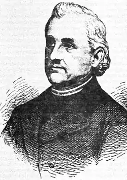

Микола Леонтійович Устиянович народився 7 грудня 1811 р. у сім’ї бурмистра містечка Миколаєва на Львівщині. Після закінчення місцевої початкової школи М. Устиянович продовжував освіту у Львові у нормальній школі, а потім у гімназії. Чутливий і запальний юнак захоплювався патріотичним ентузіазмом польської молоді на початку 30-х років.
З 1834 р. по 1838 рік М. Устиянович учився у Львівській духовній семінарії. Висвятившись на священика, був адміністратором у с. Волкові біля Львова, а згодом переїхав на парафію у гірське село Славськ, Стрийського округу.
У 1836 р. М. Устиянович написав свій перший вірш "Сльоза на гробі М. Гарасевича", який завдяки його народній мові був схвально оцінений семінаристами і спричинився до його знайомства з М. Шашкевичем. Репресії, що їх зазнали творці "Русалки Дністрової", насмішки недругів народної мови знесмілили молодого поета, і до 1846 р. він майже нічого не писав. Тільки 1848 рік розбудив М. Устияновича: він став одним із ініціаторів скликання і душею "Собору учених руських" у Львові, на сторінках перших /300/ українських газет "Зоря галицька", "Галичо-руський вісник" (деякий час М. Устиянович був її редактором) помістив свої кращі поетичні і прозові твори: "Старий Єфрем", "Месть верховинця", "Страстний четвер" та ін. У 1850 р. з переходом редакції "Вісника" до Відня М. Устиянович повернувся до Славська, продовжуючи надсилати свої твори до багатьох українських видань. В 1861 р. був обраний послом до крайового сейму. Відірваний від громадсько-культурного життя, обтяжений великою сім’єю, М. Устиянович останні двадцять років життя поступово згасав як письменник. На зміну поетичній, часто пісенній мові, яку Устиянович так високо підніс у своїх кращих творах, прийшло штучне "язичіє". Помер М. Устиянович 3 листопада 1885 р. на Буковині у м. Сучаві, куди він переїхав 1870 р. "Не послідню силу, — писав у некролозі І. Франко, — покрила буковинська земля... умер один із перших будителів нашого народного духу, друг Маркіяна, "Соловейко", як звали його молодші товариші, умер, залетівши на старості літ на чуже поле, забажавши співати "по нотам". М. Устиянович щиро любив свій рідний народ. У часи розквіту творчих сил він створив не один хороший твір народною мовою і цим заслужив шану у нащадків. Свої твори письменник підписував: Николай з Николаєва; Дротарь; Наум; Н. з Н.; Н. У.; Ъ.